Overview
Cell viability assessment is a core requirement in cell culture systems, with critical applications in biopharmaceutical manufacturing and drug development. Conventionally, it is measured by adding membrane-impermeable dyes to a sample (a process called staining), which allows intact and compromised cell membranes to be distinguished. However, staining has several limitations: (a) chemical agents can perturb normal cellular processes of the cells being measured, (b) it is often ambiguous to assign viability to individual cells whose membrane integrity is only partially compromised, (c) photobleaching can undermine measurement accuracy over time when using fluorescent stains, and (d) staining cannot be performed in situ or in real time.
Here, we report the development and validation of ViabiLens, AI-assisted software for label-free cell viability analysis. ViabiLens combines a cell detection model for localizing individual cells with a convolutional neural network (CNN) classifier for live/dead prediction, paired with an interactive UMAP-based viewer for visualizing and exploring individual cells across the sample. Evaluated on Chinese Hamster Ovary (CHO) cells spanning a wide range of viability conditions, ViabiLens achieves a mean absolute error of 2.68% on unstained samples against fluorescence-based reference measurements.
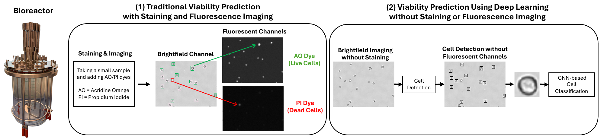
Method
Our pipeline consists of two stages: an object detection model for localizing individual cells, followed by a CNN classifier to predict their viability. Both models are trained on stained samples and then applied unchanged to unstained ones.
Dataset
CHO cells were grown in fed-batch cultures over two weeks and sampled at multiple time points to cover the range of viabilities seen in bioprocessing. Samples were stained with acridine orange (AO) and propidium iodide (PI) and imaged on a Cellaca™ PLX image cytometer, which provides a brightfield image, two fluorescence images, and a bounding box and live/dead label for every stained cell. In total, we collected 75 stained images at a resolution of 2080 × 2784 pixels (1.37 mm × 1.84 mm). For 15 of these samples, we also captured an unstained brightfield image immediately before adding the dye. The remaining 60 stained images were used for training, and the 15 stained/unstained pairs were held out for testing and never used in training. The dataset is publicly available here.
Cell detection
Because the dataset provides bounding boxes, we trained a Faster R-CNN object detector, pretrained on the COCO dataset and fine-tuned to separate cells from background using the PLX bounding boxes as ground truth. Training on full-resolution images performed poorly because each cell occupies only a few pixels of a large image. We therefore divided each training image into overlapping crops, so that cells take up a meaningful share of each input.
At inference, the full image is split into overlapping crops of the same size used in training, and the detector runs on each crop separately. Combining these results requires solving three problems. First, a cell on the edge of a crop is only partly visible. To handle this, neighboring crops overlap so that every cell appears whole in at least one crop, and we keep only boxes that lie fully inside the central region of each crop. Second, the detector may return several overlapping boxes for the same cell. Within each crop, non-maximum suppression (NMS) keeps the most confident box and removes the rest. Third, because crops overlap, the same cell can be detected in two neighboring crops. After all boxes are moved back to full-image coordinates, a second round of NMS removes these duplicates, leaving one box per cell.
Cell classification
Each detected cell is resized to a fixed-size patch and passed to a compact CNN, trained on about 137,000 PLX-labeled stained cells, that outputs the probability of the cell being live or dead. Cells are labeled using a 0.5 decision threshold. The trained model can be applied to both stained and unstained cells. Sample viability is the fraction of cells predicted live.
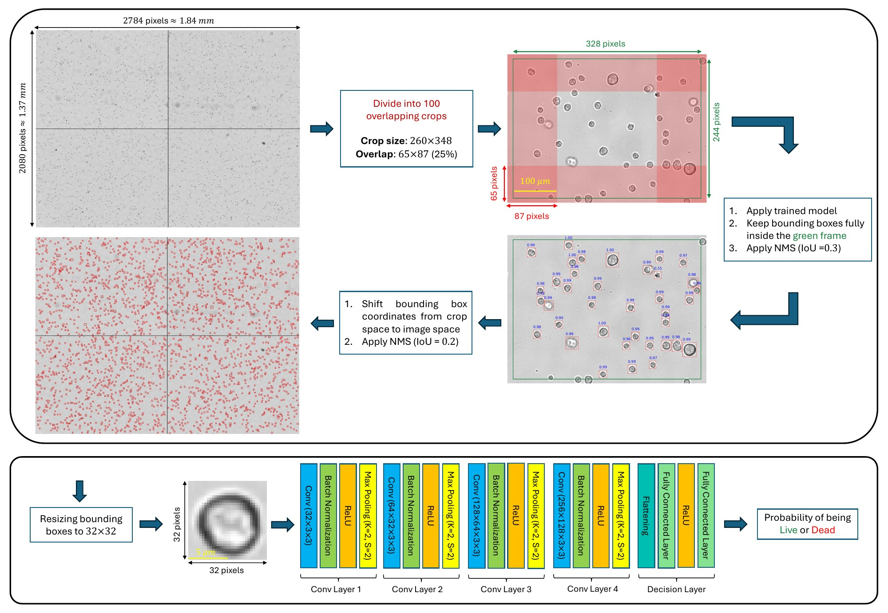
Results
A key assumption of our approach is that live and dead cells look different enough in brightfield for a model to tell them apart. To test this, we took individual cells from the 60 training images, labeled by PLX, and embedded them in 2D with PCA, t-SNE and UMAP, without access to the labels. PCA, a linear method, shows substantial overlap, while t-SNE and UMAP clearly separate live and dead populations. A k-nearest-neighbor classifier on these embeddings reaches about 95% accuracy (F1-score of about 0.80), similar to running it on the original cells, which shows that the separation reflects real structure in the data. In the Fourier domain, live cells show stronger high-frequency content, consistent with sharper membranes and denser intracellular structure, while dead cells have smoother, more diffuse profiles.
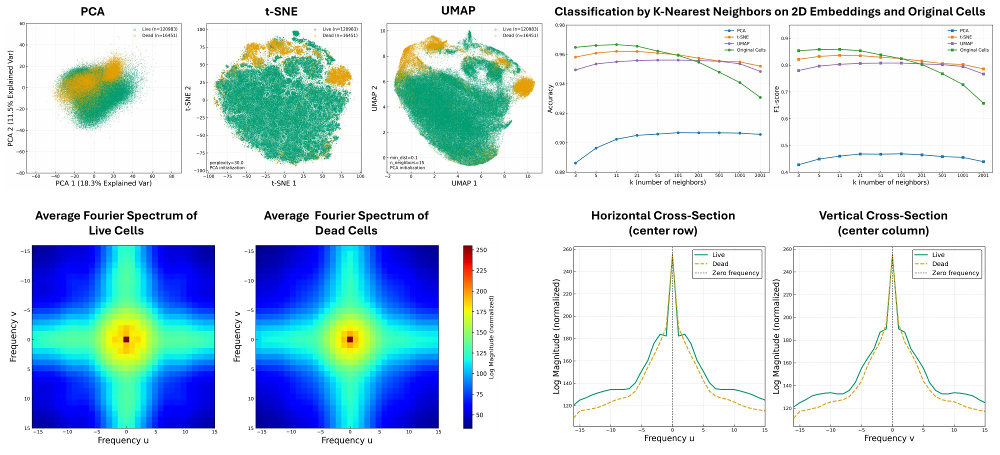
Unsupervised phenotyping
UMAP also splits dead cells into two distinct groups. White, featureless cells that have lost intracellular content (red) may reflect a later stage of cell death, while heterogeneous cells with a faint membrane outline (blue) may reflect an earlier stage. Unlike a supervised classifier, which collapses all dead cells into one label, the embedding preserves this diversity without any labels. A separate cluster (cyan) collects irregular crops, such as overlapping cells or detection errors. Removing these outliers improves dataset quality and leads to more consistent training.
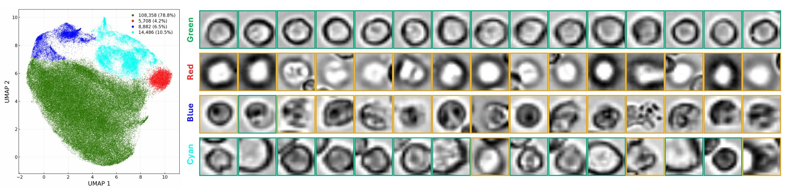
Another key assumption is that unstained cells look enough like stained ones for a model trained on stained images to generalize. This is also why we use fluorescent stains for ground truth rather than visible stains such as trypan blue, which would change the brightfield appearance of cells. To test this, we compared stained and unstained cells from the same bioreactor samples, extracted with our trained detector. The cells are unpaired, since adding the stain disturbs their positions and the same cell cannot be tracked before and after staining. In PCA, t-SNE and UMAP embeddings, the two populations intermix. A k-nearest-neighbor classifier trying to tell them apart stays close to chance (about 56–68%), even on the original cells, compared with about 95% for live versus dead. Their average Fourier spectra are also closely matched, indicating that staining does not substantially alter cell appearance in brightfield.
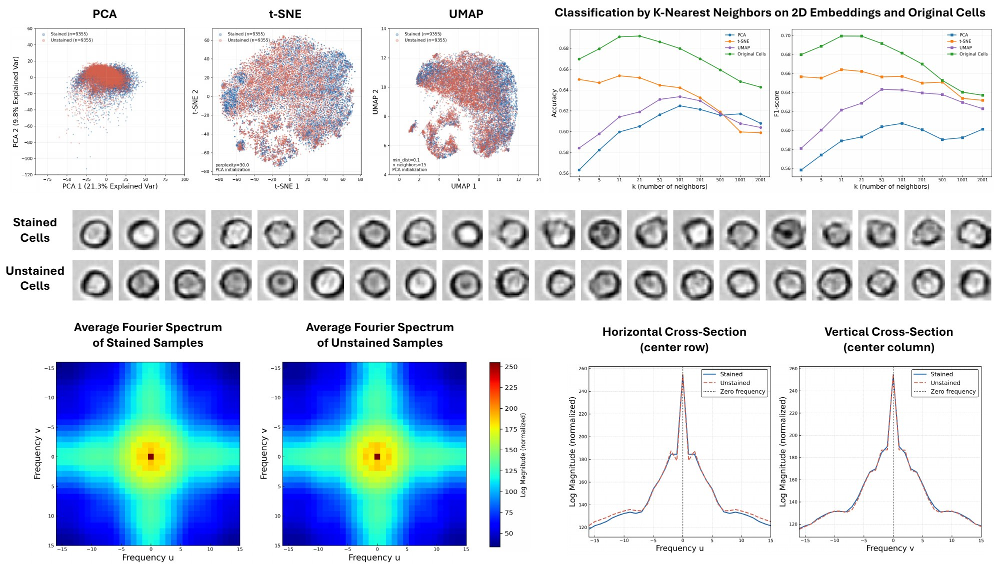
The classifier was trained on cells extracted from the 60 stained training images, with 80% of the cells used for training and 20% held out for validation. It reaches 98.64% accuracy (F1-score = 0.94) on the training set and 98.10% accuracy (F1-score = 0.92) on the validation set, with ROC AUC values of 0.998 and 0.996, respectively. Training and validation curves track each other closely, with no sign of overfitting.
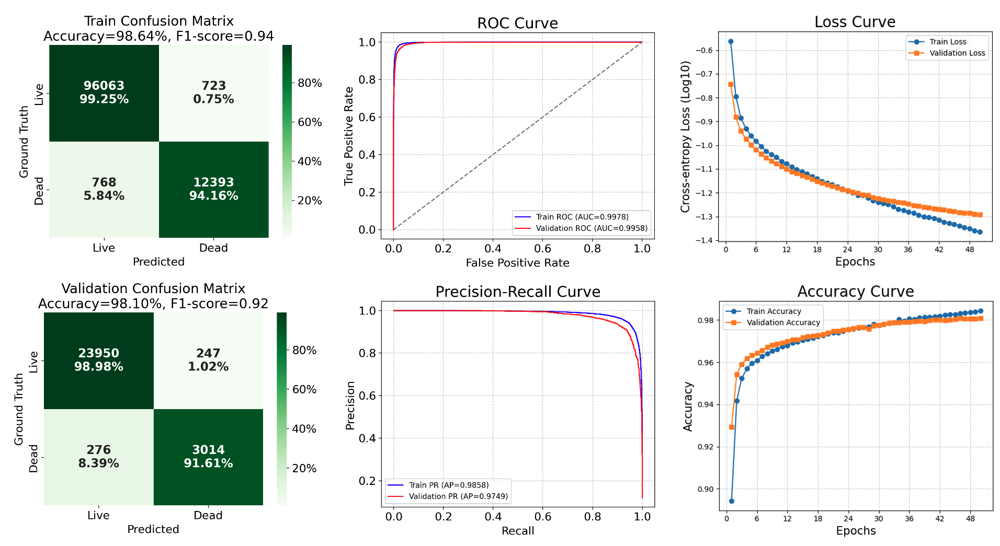
Qualitative Comparison
We compare our detector with the PLX image cytometer, a classical image-processing pipeline and pretrained Cellpose. Image processing merges clumped cells, and Cellpose struggles with white (mostly dead) cells. PLX misses a noticeable number of cells, yet these cells still appear in the fluorescence channels, suggesting that the omissions stem from the PLX detection algorithm rather than any biological difference. Our model resolves cells even in tightly clustered regions and returns a confidence score for each detected cell, which can be used to filter out low-confidence detections.
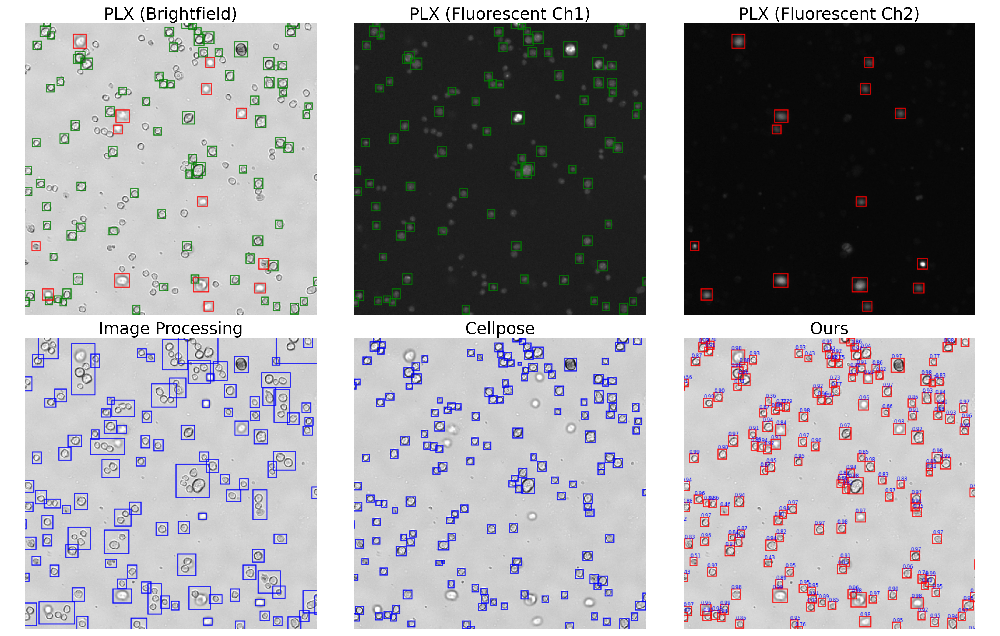
Quantitative Comparison
For cell counts, our method detects approximately 20% more cells than the PLX measurement on the training set. Visual inspection across different samples suggests that our method is able to recover missed or inaccurate bounding boxes, which indicates that training on a large set of imperfect annotations may allow a deep learning model to generalize beyond individual annotation errors. However, this observation is based on visual inspection and requires further investigation to confirm. In addition, although Cellpose detects slightly more cells than our method on the test set, visual inspection indicates that some of these detections correspond to very small false-positive cells or large bounding boxes that do not correspond to individual cells. Overall, our method achieves the best precision, recall and F1-score, with mAP ≥ 0.9 on both the training and test sets.
| Samples | Total Cell Count | Precision / Recall / F1 | mAP | ||||||
|---|---|---|---|---|---|---|---|---|---|
| PLX | Img. Proc. | Cellpose | Ours | Img. Proc. | Cellpose | Ours | Ours | ||
| Train | 45 stained samples | 109,472 | 105,140 | 114,716 | 132,680 | 0.56 / 0.52 / 0.53 | 0.76 / 0.89 / 0.81 | 0.84 / 0.95 / 0.89 | 0.90 |
| Test | 30 stained samples | 32,543 | 29,000 | 33,868 | 33,083 | 0.80 / 0.73 / 0.76 | 0.80 / 0.83 / 0.81 | 0.92 / 0.95 / 0.94 | 0.93 |
| 15 unstained samples | NA | 14,305 | 17,767 | 16,889 | NA | NA | NA | NA | |
PLX serves as the reference. It only annotates stained samples, so unstained metrics beyond cell count are not available.
Robustness across focal planes
Cell appearance can vary across focal planes, and the detection model should remain robust to such focus-dependent changes. On a focal stack of the same field of view, the detector consistently finds a similar number of cells across the full focal range. The viability classifier is more sensitive to focus because it was not trained on all focal planes. This is why predicted viability drops in the most defocused planes. Note that cells move slightly during acquisition, so they are not perfectly registered between planes.
We applied the full pipeline to the 15 held-out stained/unstained pairs, using the PLX viability of each stained sample as the reference for both. On unstained samples, ViabiLens reaches a mean absolute error of 2.68% (R² = 0.85), and on stained samples 3.57% (R² = 0.82). Stained predictions fall slightly below PLX, likely because our detector finds extra cells that tend to have lower viability. A population-level UMAP analysis reveals four morphologically distinct clusters in both conditions: sharp, well-defined cells that are predominantly live (Cluster 1), featureless, translucent cells lacking internal structure (Cluster 2), fuzzy, blurred cells that make up most dead cells (Cluster 3), and patches with multiple adjoining cells, likely undergoing division (Cluster 4). This correspondence suggests that the visual features distinguishing live and dead cells are largely preserved between stained and unstained imaging.
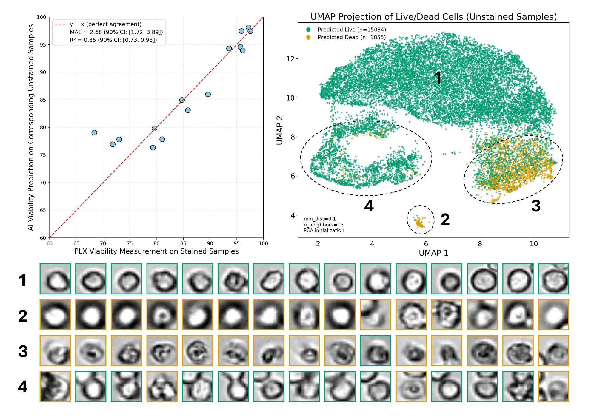
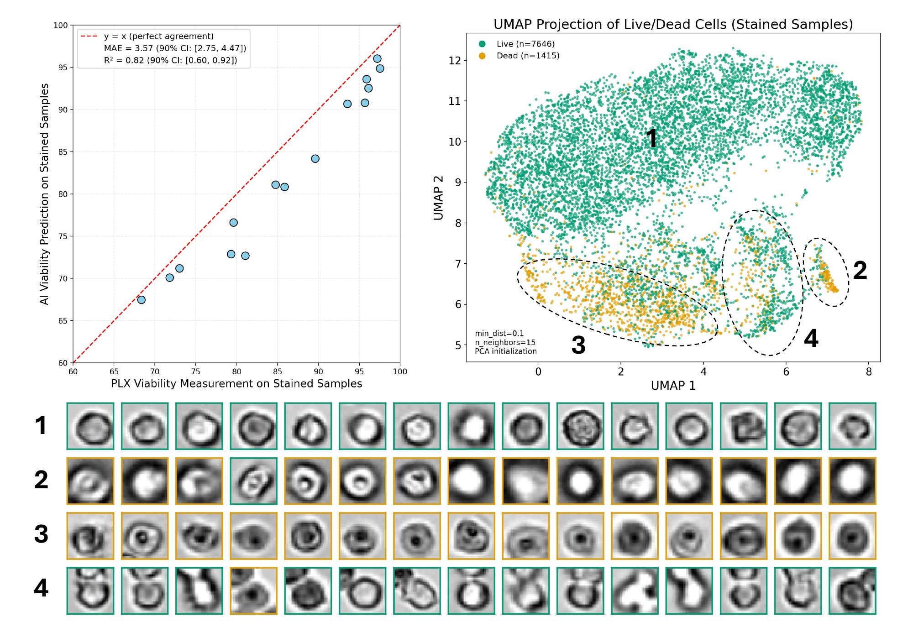
To test whether the approach carries over to other hardware, we repeated the experiments on a higher-resolution Zeiss microscope.
Dataset. Samples were taken from a fed-batch bioreactor culture over two weeks (days 1, 4, 6, 8, 11, 12, 13 and 14) and imaged on a Zeiss Axio Observer microscope (EC Plan-Neofluar 10×/0.30 Ph1 objective) at a resolution of 9684 × 11604 pixels. Each sample was captured in brightfield, phase contrast and reflected brightfield at five focal planes, with the middle plane in focus, giving 11 stained and 15 unstained images in total. For stained samples, two fluorescence channels (AO and PI) provide live/dead labels.
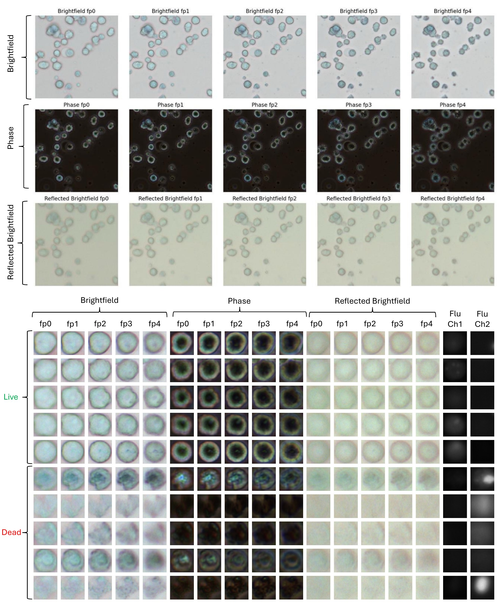
Cell detection. Since Cellpose already performs well on this dataset, we used it for detection instead of training a dedicated detector. Bounding boxes from the in-focus brightfield plane were applied to all modalities and focal planes, so the same cells are used throughout, giving 85,504 stained cells in total.
Cell classification. The cells were split into 80% for training and 20% for validation. Unlike the PLX pipeline, which uses brightfield only, the classifier takes both brightfield and phase images of each cell as input. It reaches 96.06% training accuracy (F1-score = 0.89) and 95.28% validation accuracy (F1-score = 0.87).
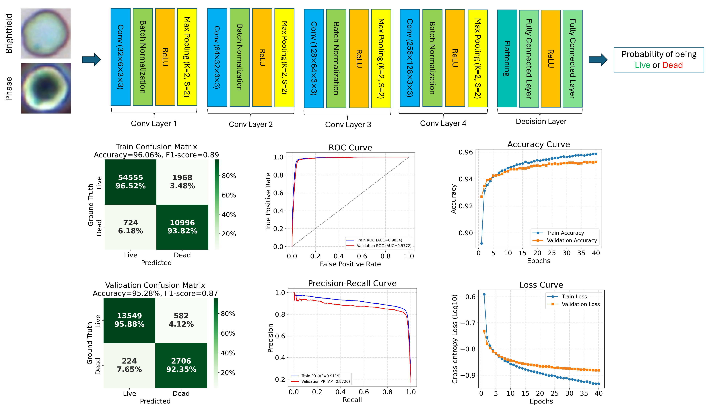
End-to-end evaluation. The same samples were also imaged on the PLX image cytometer, and its reported viability serves as the reference measurement. On the 11 stained images, predicted viability matches the PLX measurement with a mean absolute error of 2.06% (R² = 0.94). On the 15 unstained images, which were held out from training, the mean absolute error is 3.08% (R² = 0.83). In the UMAP embeddings, live and dead cells form clearly separated clusters for stained samples. For unstained samples, predicted dead cells still tend to cluster together, suggesting that the classifier generalizes beyond stained data.
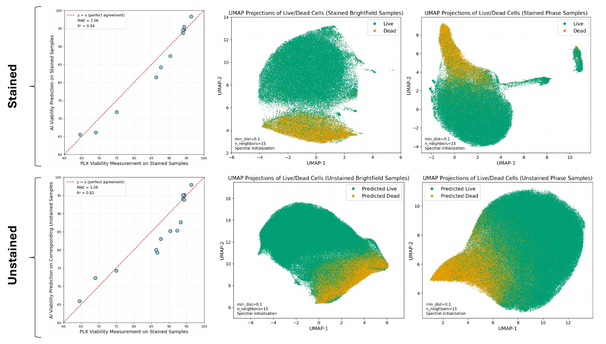
Software
To facilitate assessment and interactive benchmarking of the pipeline, we developed ViabiLens, an interactive HTML-based platform. It visualizes different imaging modalities side by side with adjustable brightness, contrast, and magnification, and overlays detected cells from all four methods for direct comparison. A UMAP projection of the sample shows AI-predicted viability, where hovering over a point previews that cell, and a summary table reports sample-level viability. Beyond its utility as a research tool for testing and refining methods, the platform is functional software with potential commercial application.
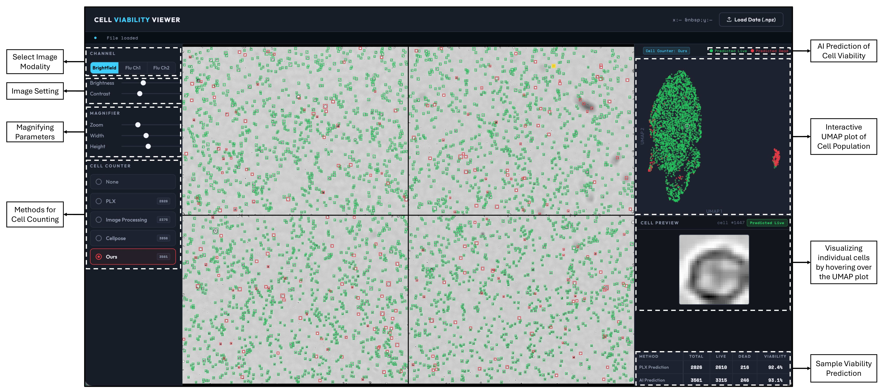
BibTeX
@article{vazifeh2026viabilens,
title = {Label-Free Cell Counting and Viability Prediction Using Brightfield Imaging and Deep Learning},
author = {Vazifeh, Amir Reza and Zeigler, Christian and Meyyappan, Sornanathan and Jeske, Richard and Fleischer, Jason W.},
journal = {arXiv},
year = {2026}
}